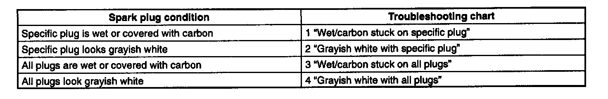
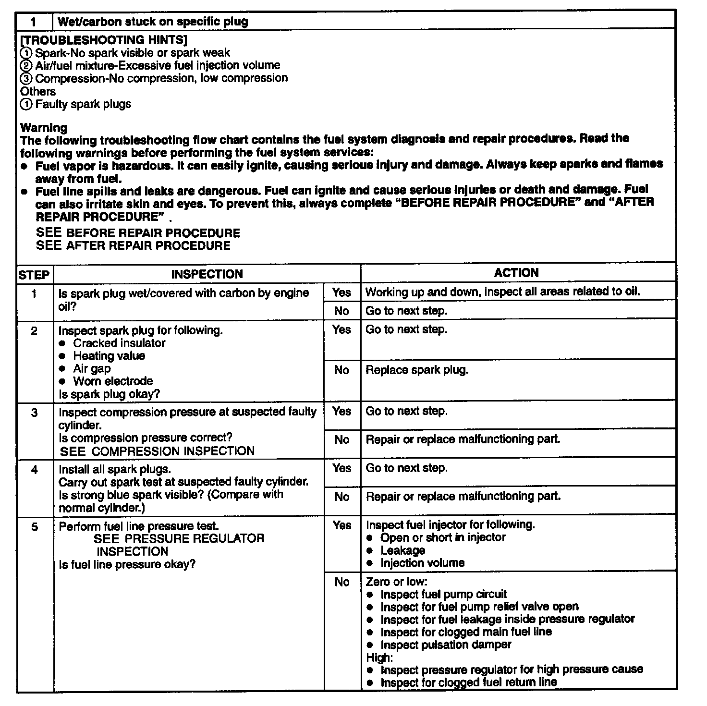
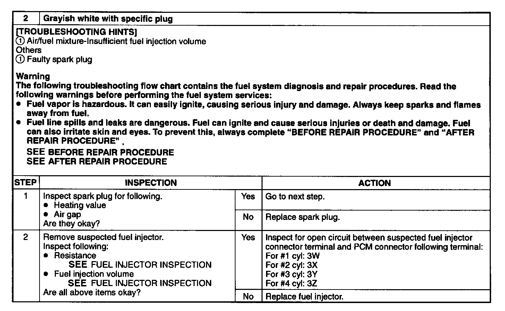
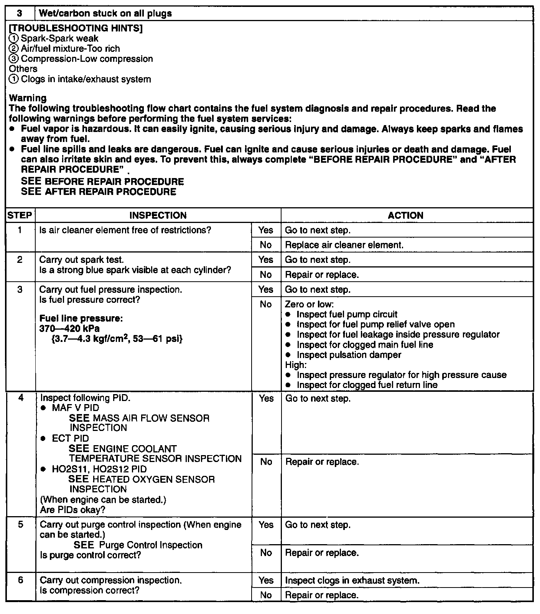
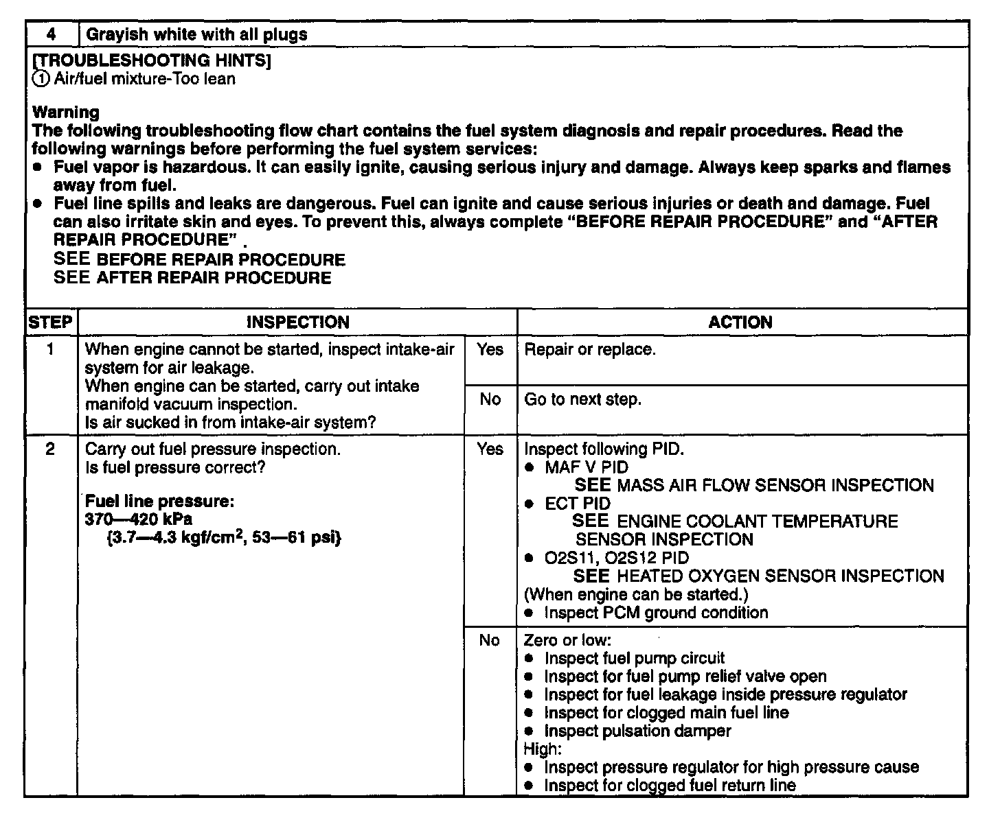

Symptom Related Diagnostic Procedures
Spark Plug Condition Inspection PurposeInspecting spark plugs condition, can determine whether problem is related to a specific cylinder possibly all cylinders.
Procedure
1. Remove the spark plug.
2. Inspect spark plug condition.
3. Go to appropriate troubleshooting chart for further information.
Spark Plug Condition:

1. Wet/carbon Stuck On Specific Plug (Step 1 To 5):

2. Grayish White With Specific Plug (Step 1 To 2):

3. Wet/carbon Stuck On All Plugs (Step 1 To 6):

4. Grayish White With All Plugs (Step 1 To 2):
